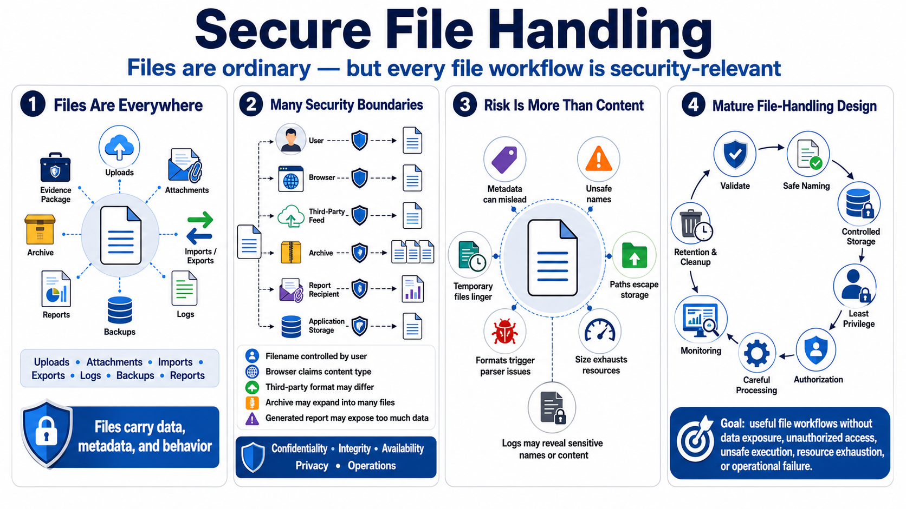

Why Secure File Handling Matters
Connecting to LMS... Progress: in progress

Narration
Files are one of the most common ways applications exchange information. They arrive as uploads, attachments, imports, exports, logs, backups, evidence packages, reports, integration artifacts, images, documents, archives, and temporary working data. Because files feel ordinary, teams sometimes treat them as simple blobs. In practice, a file can carry data, metadata, paths, formats, sizes, and parser behavior that all affect security.
File handling creates risk even in well-designed applications because it crosses many security boundaries at once. A user may control the filename. A browser may claim a content type. A third-party feed may send a format that is older than expected. An archive may expand into many files. A generated report may include more data than the recipient should receive. Each of those details can affect confidentiality, integrity, availability, privacy, and operations.
User-controlled file content is only part of the concern. Metadata can be misleading. File names can contain unsafe characters. Paths can point outside intended storage. Sizes can exhaust resources. Formats can trigger parser bugs or unexpected behavior. Temporary files can linger. Logs can expose sensitive document names or content. Secure file handling means treating every part of the file workflow as security-relevant.
A mature file-handling design combines validation, safe naming, controlled storage, least-privilege permissions, authorization checks, careful processing, monitoring, retention, and cleanup. The goal is not to block useful file workflows. The goal is to keep files from becoming an unreviewed path to data exposure, unauthorized access, unsafe execution, resource exhaustion, or operational failure.